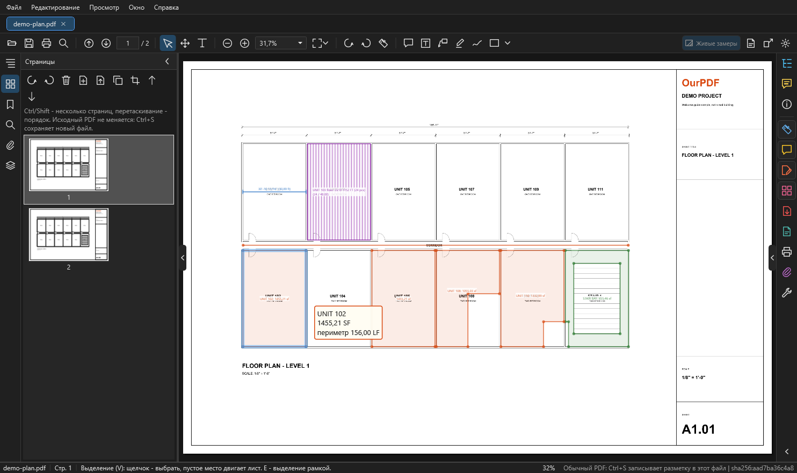

Страницы, правка PDF, слои, поиск¶
Здесь: как переставить, повернуть, удалить и вытащить страницы, поправить содержимое листа, включать и выключать слои PDF, искать текст и открывать проекты и снимки OurPlanCore. Всё, что меняет сам PDF, идёт в изменённой копии: исходный файл не трогается.

Изменённая копия: общее правило¶
- Правка страниц и содержимого идёт в изменённой копии: исходный PDF не меняется, во вкладке появляется
*. - Ctrl+Z и Ctrl+Y - шаги назад и вперёд.
- Комментарии и замеры переезжают вместе со своими страницами. Пометки, принятые из PDF, тоже; удалённые остаются удалёнными.
- Ctrl+S или "Сохранить как" для изменённой копии пишет новый файл. При закрытии такой вкладки программа спросит, сохранить ли её.
- В изменённую копию не переносятся закладки и метки страниц; слои после правки страниц (поворот, удаление и т. п.) не сохраняются.
- Снимок проекта OurPlanCore после правки страниц становится обычным PDF (программа предупредит), исходный снимок остаётся как был.
Вкладка "Страницы" слева¶
Узкие миниатюры и кнопки над ними:
| Кнопка | Что делает |
|---|---|
| повернуть против и по часовой | поворачивает выбранные страницы (меняет страницы, не вид) |
| удалить | удаляет выбранные страницы (Del) |
| вставить | вставляет страницы из файла после выбранной |
| извлечь | выбранные страницы в новый PDF, с комментариями |
| дублировать | копирует выбранные страницы |
| обрезать | протянуть рамку по листу |
| выше, ниже | перемещает выбранные страницы |
- Ctrl и Shift выбирают несколько страниц, перетаскивание меняет порядок.
- Страницы можно вытащить мышью в папку и бросить в список PDF из папки, как в сетке "Систематизировать страницы".
- Обрезать страницы можно и из меню:
Редактирование > Обрезать страницы.
Систематизировать страницы¶
Как "Систематизировать страницы" в Acrobat: сетка страниц вместо листа.
- Откройте розовый значок "Систематизировать страницы" на полосе справа или
Редактирование > Систематизировать страницы. - Сверху своя панель: влево, вправо, удалить, вставить, извлечь, дублировать, отменить, повторить, ползунок размера (или Ctrl и колесо).
- Выберите страницы: щелчок, Ctrl, Shift, рамка мышью, Ctrl+A. При наведении у страницы появляются кнопки поворота и удаления.
- Перетащите страницы, чтобы поменять порядок: синяя черта показывает, куда они встанут.
- Двойной щелчок или Enter открывает страницу, Esc или "Закрыть" возвращает к листу.
Обмен страницами с папками:
- Перетащите выбранные страницы на рабочий стол или в папку: там появится
Имя (стр. 3-5).pdfс этими страницами и их комментариями. - PDF из папки, брошенный в сетку, вставляется в место, куда его опустили.
- То же работает между двумя окнами OurPDF.
Редактировать PDF: содержимое листа¶
Правит сам чертёж: надписи, линии, картинки. Включается оранжевым значком "Редактировать PDF" на полосе справа или Редактирование > Редактировать содержимое PDF. Над листом появляется полоса: Выбор, Текст, Картинка, Удалить в рамке, Закрасить, Выделить всё, Удалить, Закрыть. Справа на ней написано, что выбрано.
Выбрать и сдвинуть¶
- Режим Выбор: щелчок берёт один объект (надпись, линию, картинку, блок).
- Рамка слева направо берёт всё, что целиком внутри (синяя); справа налево - всё, что она задевает (зелёная пунктирная, как в AutoCAD).
- Ctrl или Shift добавляют к выбранному, Ctrl и щелчок убирает, Ctrl+A - весь лист, Esc - снять выбор. Выбранное обведено розовым.
- Сдвиньте перетаскиванием или стрелками: шаг 1 pt, с Shift 10 pt. Нажатия стрелок подряд - одна правка (один Ctrl+Z).
- Del удаляет выбранное.
Поправить текст на листе¶
- Дважды щёлкните по надписи (или Enter, если выбрана одна надпись).
- Поверх неё появится поле тем же шрифтом, размером и наклоном.
- Enter записывает, Esc отменяет, пустой текст удаляет надпись.
Если во встроенном шрифте нет набранной буквы, надпись набирается установленным шрифтом той же гарнитуры (Arial, Trebuchet MS, Calibri), а если такого нет, шрифтом замены из Настроек.
Добавить и убрать¶
| Режим | Как |
|---|---|
| Текст | щелчок на листе и набор: новая надпись в самом листе |
| Картинка | выбрать файл, протянуть рамку (пропорции сохраняются) или щёлкнуть: ширина из Настроек |
| Удалить в рамке | всё, что целиком внутри рамки, удаляется |
| Закрасить | рамка закрывается сплошной заливкой, по умолчанию белой |
Добавленный текст, картинка и заливка становятся одним небольшим блоком поверх листа: его можно сдвинуть или удалить целиком. Исправленная надпись, если её нельзя было переписать на месте, тоже становится таким блоком. Блоки (формы) двигаются и удаляются целиком; объекты внутри общей формы по одному не правятся.
Как правка сохраняется¶
- Правка меняет в листе только свои операторы, всё остальное остаётся байт в байт.
- После каждой правки лист перечитывается и сверяется. Если изменилось что-то сверх задуманного, правка отменяется, документ остаётся как был, причина пишется в строке состояния.
- Перерисовку целого листа программа делает только когда иначе нельзя, с той же проверкой. На чертежах из CAD она бывает с потерями, и тогда правка не делается.
- Как и со страницами: исходный PDF не меняется, правки в изменённой копии, Ctrl+S пишет новый файл.
Настройки, раздел "Редактирование PDF": шаги стрелок и пауза между нажатиями, шрифты, цвета нового текста и заливки, рамка справа налево, размер картинок (Настройки).
Слои PDF¶
Как "Слои" в Acrobat. Значок стопки листов на левой полосе или команда "Слои PDF".
- Список повторяет дерево слоёв самого PDF; в склеенных комплектах слои сгруппированы по исходным файлам.
- Глаз у строки показывает и прячет слой, глаз у группы - все её слои. Закреплённые в PDF слои (замок) не переключаются; в радиогруппе включённый слой выключает соседей.
- Кнопки сверху: показать все, скрыть все (то, что сейчас в списке: фильтр по имени и "Только слои этой страницы" сужают его), вернуть как в файле.
- Выбранный в списке слой подсвечивается на листе малиновым (группа - все её слои) и остаётся подсвеченным при переходе на другую страницу. Esc снимает выбор и подсветку.
- Меню строки: показать только этот слой, скрыть или показать все слои с таким же именем на всех листах, подсветить слой на листе.
Чей это слой¶
- Нажмите кнопку с прицелом "Чей это слой".
- Щёлкните по линии или тексту на листе.
- Панель выделит слой, а на листе подсветится всё, что он рисует. Esc - выйти.
Что важно:
- Видимость запоминается для этого файла в профиле OurPDF и возвращается при следующем открытии; сам PDF не меняется.
- Скрытые слои не печатаются, не попадают в миниатюры, и к ним не цепляется привязка измерений.
- "Сохранить как" без возможности правки (flatten) выключает скрытые слои в новом PDF; с редактируемыми комментариями оставляет видимость, заданную в файле.
- В зашифрованном PDF слои только показываются, переключить их нельзя.
Обвести слой площадью или линией¶
Быстрый способ снять площадь штриховки (цоколь из камня, сайдинг, кровля) или её контур, если штриховка лежит на своём слое PDF.
- Вкладка "Слои" слева, выберите слой в списке: он подсветится на листе.
- Кнопка "Обвести слой площадью": каждая отдельная зона слоя на этом листе (например, каждая заштрихованная стена фасада) становится своей площадью, окна внутри вычитаются как вырезы.
- Или кнопка "Обвести слой линией": контур каждой зоны становится линией в LF.
- Проверьте результат на листе и в списке "Комментарии"; одно Ctrl+Z убирает всю обводку.
Штриховка склеивается в сплошную зону, если её линии ближе зазора из Настроек ("Обвести слой: склеивать штриховку с зазором до", по умолчанию 6 pt). Если слой распался на много мелких зон, увеличьте зазор; если соседние стены слиплись в одну, уменьшите.
Поиск¶
- Ctrl+F или кнопка-лупа: открывается вкладка "Поиск" слева.
- Введите текст. Ищутся текст PDF и имена листов, такеоффов и замеров.
- Enter или F3 - следующее, Shift+F3 (в поле Shift+Enter) - предыдущее.
- Галки: учитывать регистр, слово целиком.
Сканы без текстового слоя программа не распознаёт; их число пишется в результатах поиска.
Листы, закладки, вложения, свойства¶
- Листы (слева): дерево страниц с именами листов и фильтр по имени.
- Закладки (слева): оглавление PDF.
- Вложения (слева или значок на полосе справа): файлы внутри PDF, кнопка сохранить выбранное в файл. Вложения никогда не запускаются.
- Свойства (справа): сведения о документе и листе.
Проекты и снимки OurPlanCore¶
OurPDF показывает данные OurPlanCore только для просмотра: сам проект не меняется, takeoffs правятся только в OurPlanCore.
Открыть проект .ourplan¶
Открыть, перетащить файл в окно или "Открыть с помощью" OurPDF.- Проект открывается вкладкой
Имя.ourplanтолько для просмотра: листы, такеоффы, замеры с количествами, joists, аннотации, наложения листов. - Первое открытие собирает вид (большой проект до минуты), повторное мгновенно, пока проект не сохранён заново.
Сделать снимок проекта¶
Снимок (раньше назывался "тень") - лёгкий PDF с данными сохранённого проекта.
- Нажмите "Снимок проекта из .ourplan" справа на панели инструментов (то же в меню
Файли на полосе справа). - Выберите сохранённый проект.
- Выберите, куда сохранить. По умолчанию
Документы\OurPDF\Снимки, вне папки джобов. - Проект при этом не меняется.
Работать со снимком¶
- Справа дерево такеоффов с количествами, фильтр по имени и галка "Только этот лист".
- Щелчок по такеоффу подсвечивает его замеры на листе и строку в легенде.
- Инструмент "Выделение" выбирает замер щелчком по листу или по строке легенды. Щелчок по замеру на листе открывает справа дерево такеоффов, раскрывает его папки и показывает такеофф. Папки, которые вы раскрыли, остаются раскрытыми при выборе другого такеоффа.
- Живые замеры (кнопка справа на панели инструментов):
- включены: OurPDF сам рисует замеры из данных, только на листах с проверенной привязкой; линии OurPlanCore в живом слое тоже показывают LF при наведении;
- выключены: показан вид, сохранённый в PDF.
- Включать ли живые замеры по умолчанию: Настройки, "Снимки проектов OurPlanCore: живые замеры по умолчанию".
- Любая другая программа (Acrobat и т. д.) показывает снимок как обычный PDF со слоем "OurPlanCore Measurements".
- Поверх снимка можно ставить свои пометки OurPDF, но Ctrl+S в снимок не пишет: сохраняйте через "Сохранить как".